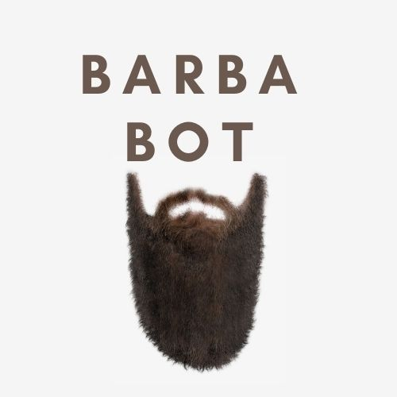

BarbaBot

BarbaBot is a basic chatbot that uses feed-forward model. It answers questions which are associated with the patterns inside the intents.
Intents
Intents file is the file which contains the database of the possible answers. The format of the file is JSON, and it is formed by three part:
- tag
- patterns
- responses
Tag is for tagging pattern and response duo, pattern is for sentences, phrases, or some keywords to catch sensible words from input, and responses is for response sentences which are used in output. Below, we can see one of the examples of our intents.
{"tag": "greetings",
"patterns": ["hey", "hello", "hi"],
"responses": ["Hello!", "Hi!", "Hey!", "Hello there!"]},
Training the Model
Training file is one of the crucial code files in our system. In this file, we built some code to train the model with the technologies which were mentioned in previous sections. After importing essential packages, first we called lemmatizer from NLTK (WordNetLemmatizer). After that, we created a list for ignored letters. ”Ignored letters” is the letter list which is not taken into consideration in our chatbot. We added question mark, exclamation mark, and so on to the list for not to confuse our model. Then we used tokenizer and lemmatizer on the intents set to create word sets. After these procedures, we removed our ignored letters from all of these word sets.
for intent in intents['intents']:
for pattern in intent['patterns']:
word_list = nltk.word_tokenize(pattern)
words.extend(word_list)
documents.append((word_list, intent['tag']))
if intent['tag'] not in classes:
classes.append(intent['tag'])
words = [lemmatizer.lemmatize(word) for word in words if word not in ignore_letters]
words = sorted(set(words))
classes = sorted(set(classes))
pickle.dump(words, open('words.pk1', 'wb'))
pickle.dump(classes, open('classses.pk1', 'wb'))
The next part, where we actively used Sequential as the model. In this part we actually started to train our model. After choosing activation function, learning rate and so on, we were to decide how to compile the model..
model = Sequential()
model.add(Dense(128, input_shape=(len(train_x[0]),), activation='tanh'))
model.add(Dropout(0.5))
model.add(Dense(64, activation='tanh'))
model.add(Dropout(0.5))
model.add(Dense(len(train_y[0]), activation='softmax'))
To compile this model, we should have decided on something else more, such as the loss of function. For the loss function, we used categorical crossentropy. Later on, the categorical crossentropy helped us to detect accuracy and the loss
sgd = SGD(learning_rate=0.005, decay=1e-6, momentum=0.9, nesterov=True) # stochastic gradient descent optimizer
model.compile(loss='categorical_crossentropy', optimizer=sgd, metrics=['accuracy'])
As the final step, we implemented model fit. In model fit, we stated our epochs and batch size, then save the model under the name of chatbot_model.
hist = model.fit(np.array(train_x), np.array(train_y), epochs=100, batch_size=5, verbose=1)
model.save('chatbot_model.model')
model.save('chatbot_model.h5', hist)